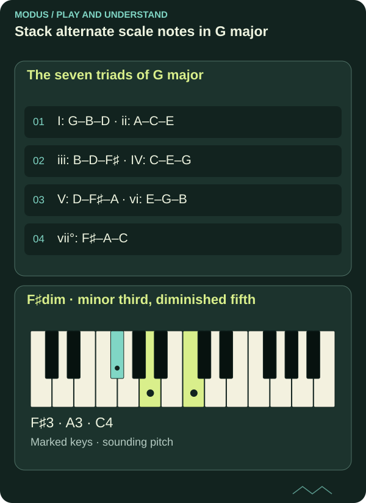

Build the chords in a key
Building triads from scale notes gives you a family of chords. G major shows how notes, chord names and Roman numerals connect.
WHAT YOU WILL LEARN
Build the chords in a key
- Build triads using alternate scale notes.
- Connect chord names to Roman numerals in a major key.
- Move the same degree pattern from G major to C major.
Before you start
You should know note names and the difference between major and minor. You do not need to know every guitar shape.

Start with the notes, not the shapes
G major consists of G, A, B, C, D, E and F♯. Choose G as the root and take alternate scale notes: G–B–D. This produces a G major triad. Start on A and do the same: A–C–E. This time you get A minor.
The distances between the notes determine the chord quality. G–B is a major third, while A–C is a minor third. That is why the chords are not all major, even though you are using a major scale.

Read the diagram as text
- The seven triads of G major: I: G–B–D · ii: A–C–E; iii: B–D–F♯ · IV: C–E–G; V: D–F♯–A · vi: E–G–B; vii°: F♯–A–C
- F♯dim · minor third, diminished fifth: F♯3 → A3 → C4
The seven triads in G major
Continue from each scale degree using only notes from G major. After F♯, continue with G in the next octave. The chords are G, Am, Bm, C, D, Em and F♯dim.
The notes are G–B–D, A–C–E, B–D–F♯, C–E–G, D–F♯–A, E–G–B and F♯–A–C. The final triad is diminished: above F♯ it has a minor third, A, and a diminished fifth, C.
Roman numerals show the pattern
In G major, the sequence is I–ii–iii–IV–V–vi–vii°. Uppercase numerals indicate major, lowercase indicate minor, and the small circle indicates a diminished triad. This pattern applies to diatonic triads in every major key.
Try I–V–vi–IV: G–D–Em–C. Move the same degree pattern to C major and it becomes C–G–Am–F. The notes and shapes change, while the relationship between the degrees remains.
The same notes can have a different home
E natural minor uses the same notes as G major. Yet Em is the first degree when E is the centre, and the sixth degree in G major. Choose the reference key before assigning Roman numerals to a progression.
Diatonic here means that the chord tones come from the selected scale. Music can also use chords outside this family. First learn to recognise the pattern; later departures will then be easier to understand.
One step further: ii–V–I with sevenths
Once you are comfortable with triads, add another note by continuing with alternate scale notes. In C major, D–F–A–C gives Dm7, G–B–D–F gives G7, and C–E–G–B gives Cmaj7. These are the second, fifth and first degrees: ii7–V7–Imaj7.
This is an optional extension of the triad exercise. You still use only C, D, E, F, G, A and B. Listen for the arrival on Cmaj7; you do not need to master new shapes at full speed.
FROM READING TO PLAYING
Try it yourself.
Write the notes of G, Am and D before playing them. Then play G–D–Em–C and say I–V–vi–IV. Move the same pattern to C major and check which notes change.
- Start with the triads in the exercise above. Write down and check the notes before playing.
- To try the seventh-chord sound, open Dm7–G7–Cmaj7 with the button below. Listen first, then play one chord per bar at 60 BPM. On guitar, choose a shape you can reach calmly; on piano, you can play the root first and then the remaining chord tones.
- Say ii7–V7–Imaj7 as you play. Notice which notes change and listen for the arrival on Cmaj7.
- Change the tonic to D and keep Ionian. Expect Em7–A7–Dmaj7. Check this before listening. You are ready for the quiz when you can explain why the chord names change while the degree pattern stays the same.
CHECK YOUR UNDERSTANDING
What do you remember?
Three questions about what you have read. Get all three right to complete the quiz. Try as many times as you like.
Completion is saved in this browser and shared between Norwegian and English.
You answered all three questions correctly. Take the idea to your instrument.
Back to the article library ↗︎RELATED READING
Seventh chords: more colour, the same foundation
You have built triads from the scale. Now explore what the fourth note adds and understand Dm7, G7 and Cmaj7 in more detail.
Seventh chords: more colour, the same foundation ↗︎